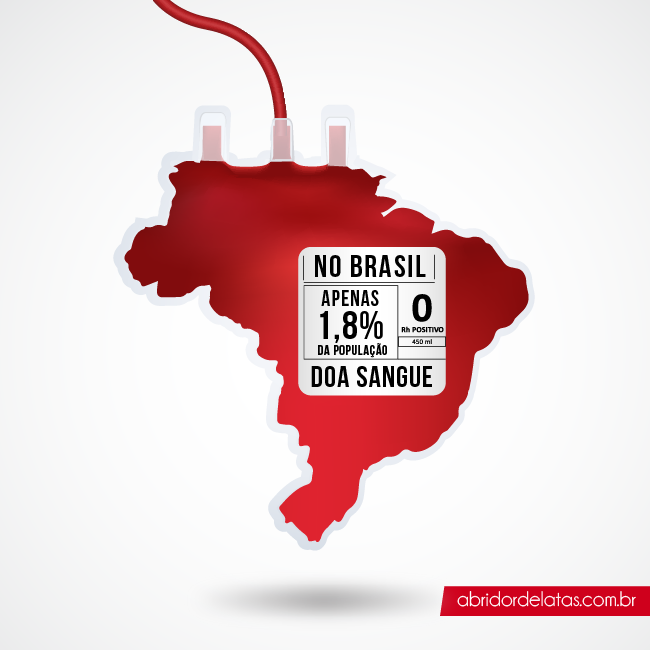

Doação de Sangue
A doação de sangue é um gesto solidário de doar uma pequena quantidade do próprio sangue ara salvar a vida de pessoas que se submetem a tratamentos e intervenções médicas de grande porte e complexidade, como transfusões, transplantes, procedimentos oncológicos e cirurgias. Além de pessoas que submetem a procedimentos e intervenções médicas, o sangue também é indispensável para que pacientes com doenças crônicas graves - como Doença Falciforme e Talassemia - possam viver por mais tempo e com mais qualidade, além de ser de vital importância para tratar feridos em situações de emergência ou calamidades.
A necessidade...
Créditos: Abridordelaras
.
E a realidade

LOs componentes de uma bolsa de sangue servem para quem está no centro cirúrgico, hemofílicos, pacientes com câncer e transplantados. O nível dos estoques de sangue, hoje, no país está mais baixo do que no período crítico da pandemia. É que, com a reabertura, o número de doadores subiu bem menos que o de cirurgias eletivas agendadas. Muitos procedimentos foram adiados nos últimos dois anos. Em São Paulo, por exemplo, a Função Pró-Sangue tem hoje 30% do volume necessário de bolsas para atender os hospitais da região metropolitana. Em Minas, só quatro dos 10 doadores regulares antes da pandemia voltaram. “Os nossos tipos sanguíneos positivos estão com uma queda de aproximadamente 50%. Já os negativos, estão mais baixos ainda, aproximadamente 60%”, ressalta Hellen Heloisa Dupim, responsável pelo setor de captação do Hemominas. No Paraná, é alto o risco de não ter sangue para uma emergência. “Lembrando que estamos entrando na parte de inverno. Então, as manifestações gripais estão maiores e, com o frio, poucas pessoas não saem das suas casas para fazer a doação. Com isso, nossos estoques estão muito baixos, muito críticos", diz a diretora-geral do Hemepar, Liana Labres. 31 de janeiro, todos os tipos negativos de sangue estavam em nível emergencial - o nível mais crítico - na Fundação Pró-Sangue Complicações na gravidez e no parto matam mais de 500 mil mulheres por ano, de acordo com dados divulgados pela Organização Mundial de Saúde (OMS). Cerca de 25% dessas mortes são provocadas por fortes hemorragias que não puderam ser tratadas de forma adequada, muitas vezes por causa da falta de sangue para reposição. No último ano, Unidades de Terapia Intensiva (UTIs) e enfermarias do Hospital do Servidor Público Estadual (HSPE) têm recorrido ao Banco de Sangue em busca de hemocomponentes usados no tratamento de casos graves da Covid-19. Uma em cada oito transfusões realizadas foi destinada a pacientes que desenvolveram doenças, como anemias, hemorragias agudas, coagulopatias, tromboses e choque séptico em decorrência do novo Coronavírus.
Nossa iniciativa
Nós surgimos então com o propósito de incentivar a população a se dedicarem a esse ato de amor, por meio de parceiras com empresas e organizações visando descontos e etc para os doadores de sangue.
Quer entender melhor como funciona a nossa proposta? Acesse
Quer conhecer nossas parcerias e descontos? Acesse
O que você precisa para doar sangue?
- Estar em boas condições de saúde.
- » Ter entre 16 e 69 anos, desde que a primeira doação tenha sido feita até 60 anos (menores de 18 anos, clique para ver documentos necessários e formulário de autorização).
- » Pesar no mínimo 50kg.
- Estar descansado (ter dormido pelo menos 6 horas nas últimas 24 horas).
- » Estar alimentado (evitar alimentação gordurosa nas 4 horas que antecedem a doação).
- » Apresentar documento original com foto recente, que permita a identificação do candidato, emitido por órgão oficial (Carteira de Identidade ou cópia autenticada; Cartão de Identidade de Profissional Liberal; Carteira de Trabalho e Previdência Social; Carteira Nacional de Habilitação, digital ou física; RNE - Registro Nacional de Estrangeiro; Título de Eleitor Digital, desde que tenha a foto; e Passaporte brasileiro com filiação).
- » Homens - 60 dias (máximo de 04 doações nos últimos 12 meses).
- » Mulheres - 90 dias (máximo de 03 doações nos últimos 12 meses).
Mas, muita atenção, existem algumas condições que podem te impedir de doar sangue
Temporariamente
- » Resfriado: aguardar 7 dias após desaparecimento dos sintomas.
- » Gravidez.
- » 90 dias após parto normal e 180 dias após cesariana.
- » Amamentação (se o parto ocorreu há menos de 12 meses).
- » Ingestão de bebida alcoólica nas 12 horas que antecedem a doação.
- » Tatuagem, maquiagem definitiva e micropigmentação (sobrancelhas, lábios, etc.): aguardar 12 meses; se feitas em local adequado (seguro) e com todos os cuidados necessários (assepsia correta e material descartável), o prazo é de 6 meses.
- » Situações nas quais há maior risco de adquirir doenças sexualmente transmissíveis: aguardar 12 meses.
- » Qualquer procedimento endoscópico (endoscopia digestiva alta, colonoscopia, rinoscopia, etc.): aguardar 6 meses.
- » Extração dentária (verificar uso de medicação) ou tratamento de canal (verificar medicação): por 7 dias. » Cirurgia odontológica com anestesia geral: por 4 semanas.
- » Acupuntura: se realizada com material descartável: 24 horas; se realizada com laser ou sementes: apto; se realizada com material sem condições de avaliação: aguardar 12 meses.
- Herpes labial ou genital: apto após desaparecimento total das lesões. » Herpes Zoster: apto após 6 meses da cura (vírus Varicella Zoster).
- rasil: estados como Acre, Amapá, Amazonas, Rondônia, Roraima, Maranhão, Mato Grosso, Pará e Tocantins são locais onde há alta prevalência de malária. Quem esteve nesses estados deve aguardar 12 meses para doar, após o retorno. » EUA: quem esteve nesse país deve aguardar 30 dias para doar, após o retorno. » Europa: quem morou na Europa após 1980, verificar aptidão para doação no (11) 4573-7800.
- Malária: quem esteve em países com alta prevalência de malária deve aguardar 12 meses após o retorno para doar. (critério semelhante ao dos estados brasileiros com prevalência elevada de malária). » Febre Amarela: quem esteve em região onde há surto da doença deve aguardar 30 dias para doar, após o retorno; se tomou a vacina, deve aguardar 04 semanas; se contraiu a doença, deve aguardar 6 meses após recuperação completa (clínica e laboratorial).
- Vacina contra gripe: por 48 horas. » » Coronavírus: · Candidatos que apresentaram diagnóstico ou suspeita de coronavírus estão aptos a doar 10 dias após a completa recuperação. · Candidatos assintomáticos com teste positivo estão aptos a doar após 10 dias da data de realização do teste. · Candidatos que tiveram contato com casos positivos de contaminação por coronavírus estão aptos a doar após 7 dias do último contato. · Candidatos que fizeram isolamento voluntário ou por orientação médica estão aptos a doar após o término do tempo de indicação de isolamento. · Profissionais de saúde estão aptos a doar, desde que estejam fazendo uso correto de EPI. · Candidatos que foram vacinados contra Covid-19 só podem doar: - 48 horas após cada dose (vacina Coronavac, da Sinovac/Butantan); - 7 dias após cada dose (vacina da Oxford/AstraZeneca/Fiocruz); - 7 dias após cada dose (vacina da Pfizer/BioNtec/Fosun Pharma); - 7 dias após cada dose (vacina da Janssen-Cilag); - 7 dias após cada dose (vacina Sputinik V, da Gamaleya National Center); - 48 horas após cada dose (vacina Covaxin, da Bharat Biotech); e - 7 dias após cada dose (vacina da Moderna/Instituto Nacional de Alergia e Doenças Infecciosas).